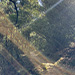

-

 <羊蹄山洞爺湖>洪秉誠│企業產品硬體工程一處 \ 系統設計部皚皚雪峰羊蹄山矗立洞爺湖畔，山色湖光交織，展現北海道壯闊的絕景。
<羊蹄山洞爺湖>洪秉誠│企業產品硬體工程一處 \ 系統設計部皚皚雪峰羊蹄山矗立洞爺湖畔，山色湖光交織，展現北海道壯闊的絕景。 -
 <糖果屋般的賈米埃勒阿爾法清真寺>
<糖果屋般的賈米埃勒阿爾法清真寺>
(Jami Ul-Alfar Mosque)蘇承宜│業務開發處 \ 業務運籌部又稱紅白清真寺，外牆由紅、白兩色磚塊交替堆疊而成（並非噴漆） -
 <雲端之手托起的夢幻金橋>金國琳│數位採購資料處 \ 策略採購資料一部漫步在海拔千米的山巒之上，金色步道彷彿被巨大的雙手輕輕托起，行走其間，不僅能俯瞰壯闊山景，更讓人感受到置身天空的奇幻氛圍，是視覺與心境都被療癒的難忘體驗。
<雲端之手托起的夢幻金橋>金國琳│數位採購資料處 \ 策略採購資料一部漫步在海拔千米的山巒之上，金色步道彷彿被巨大的雙手輕輕托起，行走其間，不僅能俯瞰壯闊山景，更讓人感受到置身天空的奇幻氛圍，是視覺與心境都被療癒的難忘體驗。 -
 <空中俯瞰的神戶城市風景>楊子慧│機構技術處 \ 聲學音響結構部這張照片拍攝於神戶布引香草園纜車上，紅色纜車懸掛於半空，俯瞰整座神戶城市。高樓林立與港灣海景交織，遠方天際在夕陽餘暉下泛著柔和金光。腳下綠意山林與都市街道形成鮮明對比，展現自然與城市共存的景致。透過纜車窗景，彷彿在空中漫遊，靜靜欣賞這座城市的節奏與溫度。
<空中俯瞰的神戶城市風景>楊子慧│機構技術處 \ 聲學音響結構部這張照片拍攝於神戶布引香草園纜車上，紅色纜車懸掛於半空，俯瞰整座神戶城市。高樓林立與港灣海景交織，遠方天際在夕陽餘暉下泛著柔和金光。腳下綠意山林與都市街道形成鮮明對比，展現自然與城市共存的景致。透過纜車窗景，彷彿在空中漫遊，靜靜欣賞這座城市的節奏與溫度。 -
 <秋韻靜境>楊子慧│機構技術處 \ 聲學音響結構部紅橙交織的葉片輕放於深藍色器皿中，色彩對比鮮明，展現秋日的溫潤層次。前景清晰細緻，背景柔和虛化，隱約可見庭園綠意與枝影，營造出寧靜悠遠的氛圍。光影灑落石面，增添自然質感與時間流動感，彷彿將瞬間的美好凝結於畫面之中。
<秋韻靜境>楊子慧│機構技術處 \ 聲學音響結構部紅橙交織的葉片輕放於深藍色器皿中，色彩對比鮮明，展現秋日的溫潤層次。前景清晰細緻，背景柔和虛化，隱約可見庭園綠意與枝影，營造出寧靜悠遠的氛圍。光影灑落石面，增添自然質感與時間流動感，彷彿將瞬間的美好凝結於畫面之中。 -
 <波上宮>歐怡伶│系統應用研發處 \ 系統應用一部位於沖繩那霸的波上宮，建在臨海的懸崖之上；若不走到對面的大橋，便無法一睹它完整而壯觀的景象。
<波上宮>歐怡伶│系統應用研發處 \ 系統應用一部位於沖繩那霸的波上宮，建在臨海的懸崖之上；若不走到對面的大橋，便無法一睹它完整而壯觀的景象。 -
<雪人>歐怡伶│系統應用研發處 \ 系統應用一部我在這片雪地中佇立不動，默默等待著想要體驗雪橇樂趣的孩童們。
-
<聖誕樹>歐怡伶│系統應用研發處 \ 系統應用一部在雪地裡緩緩駕車，靜靜享受雪白無瑕的風景，以及眼前那一整片聖誕樹。
-
<晚安 馬卡巴卡>曾玟翔│平鎮營運一處 \ 海關課這是一隻慵懶的熊貓，躺在上面，賣萌給你看。
-
 <蛤?>曾玟翔│平鎮營運一處 \ 海關課這是一隻牛，不理解人類為何要拍照的表情。
<蛤?>曾玟翔│平鎮營運一處 \ 海關課這是一隻牛，不理解人類為何要拍照的表情。 -
 <店長狗狗!!>曾玟翔│IPC研發一處 \ 硬體研發部位於湖口的小咖啡廳，每當有客人要去櫃檯點餐時，店長狗狗馬上就會敬業的站到點餐檯上招呼客人，非常的乖巧，是不是讓人看了一整天都會心情愉快!!
<店長狗狗!!>曾玟翔│IPC研發一處 \ 硬體研發部位於湖口的小咖啡廳，每當有客人要去櫃檯點餐時，店長狗狗馬上就會敬業的站到點餐檯上招呼客人，非常的乖巧，是不是讓人看了一整天都會心情愉快!! -
 <櫻花>邱詩儒│平鎮營運一處 \ Sustaining專案課來趟淡水天元宮，感受下櫻花盛開，春光爛漫。
<櫻花>邱詩儒│平鎮營運一處 \ Sustaining專案課來趟淡水天元宮，感受下櫻花盛開，春光爛漫。 -
 <天竺鼠>簡志銘│業務處 \ 客戶服務部小小身軀，大大療癒，天竺鼠陪你不孤單！
<天竺鼠>簡志銘│業務處 \ 客戶服務部小小身軀，大大療癒，天竺鼠陪你不孤單！ -
 <九眼橋>林彥廷│機構技術處 \ 關鍵組件部在成都，有條在夜裡比白天輝煌的橋，輝映著夜晚裡的男男女女。
<九眼橋>林彥廷│機構技術處 \ 關鍵組件部在成都，有條在夜裡比白天輝煌的橋，輝映著夜晚裡的男男女女。 -
 <朝曙>林彥廷│機構技術處 \ 關鍵組件部看慣了一成不變的天花板，假日最讓人期待的就是徜徉在隙間透出的朝曙以及柔和的風。
<朝曙>林彥廷│機構技術處 \ 關鍵組件部看慣了一成不變的天花板，假日最讓人期待的就是徜徉在隙間透出的朝曙以及柔和的風。 -
<碧山露營場空中步道>連柏柔│企業產品硬體工程一處可以遠眺台北101的S型空中步道，步道約80公尺，偶爾還能看到飛機起降，是個欣賞城市美景的好地方。
-
 <日月潭文武廟>連柏柔│企業產品硬體工程一處因前殿祀關聖帝君，後殿祀至聖先師孔子，因而命名為文武廟，從日治時期至今，歷經了幾次重建後，如今又多了觀景平台與後山花園，也吸引了不少觀光客造訪。
<日月潭文武廟>連柏柔│企業產品硬體工程一處因前殿祀關聖帝君，後殿祀至聖先師孔子，因而命名為文武廟，從日治時期至今，歷經了幾次重建後，如今又多了觀景平台與後山花園，也吸引了不少觀光客造訪。 -
 <阿寒湖冰上煙火表演>黃偉玉│品質本部來到北海道還有著原住民愛努民族生活的阿寒湖，在零下十幾度的寒冷中，站在結冰阿寒湖上看令人印象深刻的煙火表演
<阿寒湖冰上煙火表演>黃偉玉│品質本部來到北海道還有著原住民愛努民族生活的阿寒湖，在零下十幾度的寒冷中，站在結冰阿寒湖上看令人印象深刻的煙火表演 -
 <丹頂鶴自然公園>黃偉玉│品質本部冬天是到北海道釧路的丹頂鶴保護棲息地觀賞丹頂鶴的好時機，很幸運看到優雅而美麗的牠。
<丹頂鶴自然公園>黃偉玉│品質本部冬天是到北海道釧路的丹頂鶴保護棲息地觀賞丹頂鶴的好時機，很幸運看到優雅而美麗的牠。 -
 <日落之前>黃名榕│數據中心系統開發業務本部 \ 主件策略採購部夕陽緩緩落下，把整片海染成溫柔的橘色，就像是一天的情緒也被安放著。橋靜靜橫在遠方，看著波浪看著夕陽，只想停在光還沒完全消失之前，記住這份剛剛好的寧靜與餘溫。
<日落之前>黃名榕│數據中心系統開發業務本部 \ 主件策略採購部夕陽緩緩落下，把整片海染成溫柔的橘色，就像是一天的情緒也被安放著。橋靜靜橫在遠方，看著波浪看著夕陽，只想停在光還沒完全消失之前，記住這份剛剛好的寧靜與餘溫。 -

<光的方向>黃名榕│數據中心系統開發業務本部 \ 主件策略採購部陽光穿過樹林，落在蜿蜒的小徑上，像在替前方指引方向。光總會在某個角度出現，提醒我繼續往前。也許路不一定筆直，但跟著光還有心的方向，就不會迷路。 -
 <城市軌跡>黃名榕│數據中心系統開發業務本部 \ 主件策略採購部鐵軌延伸向遠方，連向城市著名的地標大樓。城市的喧囂在兩側流動，而我站在中間，看著它們交錯。人生也許也是這樣，各自前進、各自精彩，但總有一段路，是屬於自己慢慢走完的風景。
<城市軌跡>黃名榕│數據中心系統開發業務本部 \ 主件策略採購部鐵軌延伸向遠方，連向城市著名的地標大樓。城市的喧囂在兩側流動，而我站在中間，看著它們交錯。人生也許也是這樣，各自前進、各自精彩，但總有一段路，是屬於自己慢慢走完的風景。


{kind=link}
{kind=link}
{kind=link}
{kind=link}
{kind=link}